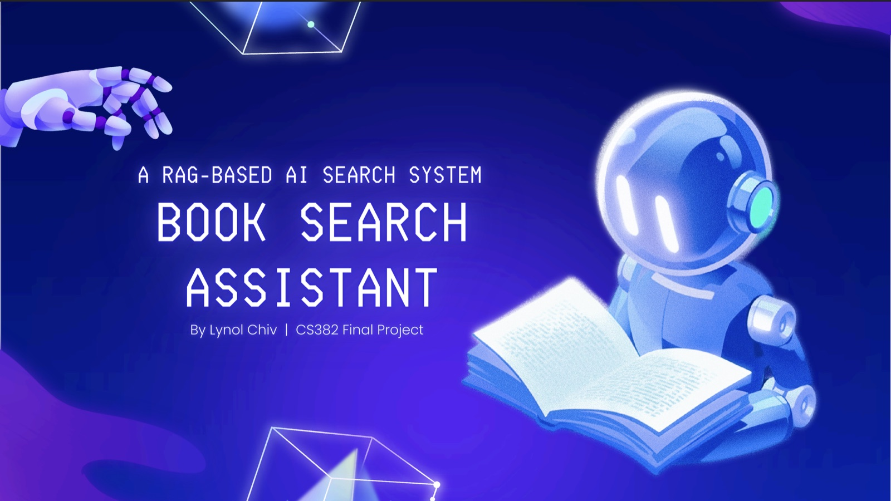

My Case Studies
Here are some projects that showcase my technical skills and problem-solving approach.

RAG-Based AI Search System
A Retrieval-Augmented Generation system that answers questions across 20 self-improvement books. Python and Streamlit, with local all-MiniLM-L6-v2 embeddings, cosine retrieval over a sentence-aware chunked corpus, and grounded generation that cites its sources — or refuses when they don't hold an answer. Scored 7/7 on retrieval hit@4 and citation accuracy.
Vertical High-Fi Prototype
Vertical High-Fi Prototype with interactions for the Future of HCI project. This prototype showcases a fully interactive user journey and detailed interface design.
View Case Study →User Journey Process
Detailed process documentation using FigJam. Includes Mind Mapping, Persona, POV Problem Statements, HMW Questions, Brainstorming Solutions, and UX Storyboarding.
View Case Study →